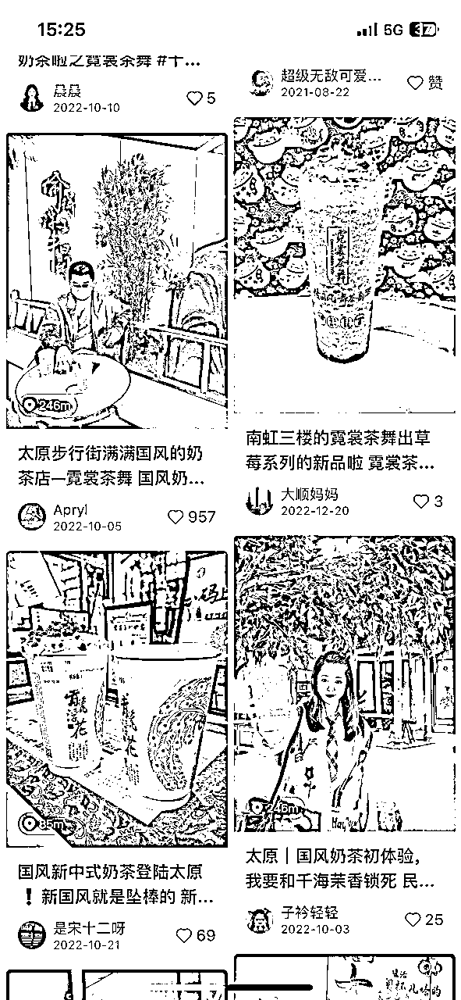

来源：https://mxm6pm7z7sk.feishu.cn/docx/AZkidNlc2ohmtOxxejYcgpw9nnh
大家好，我是不语。今年四月加入生财，目前主要的业务是线上推广、本地探店以及实体店铺美团大众点评的代运营。聚焦本地线下生活。服务了超50+连锁商家，其中主营成都，昆明，太原，上海等城市。帮助百分之八十的商家从亏损到持平再到盈利。
近一年，已成功变现60W+。现在每月被动收入2W+（顾问固定费用），主动收入5W+。分享一下我做探店+线上推广的体会和实操经验。
部分案例：朋来访小海鲜成都部分门店（门店销售额从日3k到5k），霓裳茶舞太原店（柳巷商圈众多奶茶店中脱颖而出，让人们熟知的古风奶茶店），昆明知名甜品连锁品牌（线上销售额从最初日300-500--日2000-3000），全球知名家具品牌

很多伙伴可能觉得探店项目出来挺久了，其实空白市场还是非常大的
一二线城市的老板 起码有一半没有找到合适的推广合作伙伴
三线城市以下的老板 大部分都没怎么接触过探店
每个项目都有人在挣钱，不管是不是在红利期。还是看你如何对待，是否专业。
这篇文章主要讲了对探店的一些属于自己的推广思路和我对现在国内一二三线城市的看法。
自2020年以来，美食和探店博主的数量迅速增长。出现这一现象的原因在于，成为这种博主的门槛相对较低，许多热爱记录生活的人也因此逐渐开始转变为专业的美食和探店博主。同时，我们也看到市场需要更专业的人来从事探店以及长期的代运营。
然而，正因为这一领域的门槛低、要求也相对较低，导致了越来越多的人涌入这个行业。许多对新媒体并不了解的老板，可能被那些所谓的新媒体公司和达人用虚假数据欺骗。这也造成了一线和二线城市的许多业主对于探店和代运营产生了抵触感。
几个月前我和一家川菜馆的老板聊过，他曾与一家代运营公司达成合作，支付了半年的服务费，然而在半年过去后，他们并未看到任何实质性的效果。代运营公司却将责任推给老板，称他们未能配合进行活动的开展。最终，这位老板失去了3000元，却没有得到任何回报。
有一部分博主只是会简单的拍摄，但是不了解互联网，仅凭胆大有手机直接接单拍摄。却没有办法给客户（实体店老板）一个好的交付，这对懂互联网的大家来说是一个很好的机会。
在当前的市场环境下，抖音官方正在大力发展下沉市场。然而，许多商家并不擅长在线运营，他们对如何有效地利用这些平台进行营销和推广缺乏足够的知识和经验。因此，他们非常需要找到专业的合作伙伴，来帮助他们进行有效的在线推广和代运营。
我们的目标就是成为这样的合作伙伴，利用我们的专业知识和经验，帮助商家有效地利用抖音等平台进行在线推广，以吸引更多的消费者。我深信，只有通过专业、高效的运营，商家才能在竞争激烈的市场中脱颖而出，实现他们的商业目标。
我们在探店和代运营领域有丰富的经验，我们能够理解商家的需求，设计出适合他们的推广策略。我们不仅会帮助他们在抖音等平台上建立起良好的形象，还会通过有效的推广策略，吸引更多的消费者，实现商家的增长目标。
简单说下现在探店的现状吧
做探店+线上推广的初衷是我感觉到了市场的鱼龙混杂，很多不专业的人都在做这些事儿。虽然老板很多都被割了一波，但是还是很需要很想要一些有效的推广服务。尤其是一些很优质的店铺，但是因多方因素导致店铺生意惨淡的老板。
每个人做推广的思路和想法不一样，我因为从事自媒体相关行业多年，所以我对多数博主，各个领域的博主信任度都不是很高。所以我一直坚持的就是，组织一批自己的人，不管是低粉博主还是素人，自己尽可能的去管理去要求。不要什么店都做，什么单都接。尽可能的提高自己的信任度，要做可持续发展的事儿。
在咱们五月航海志愿者期间，一家直营连锁品牌老板联系我需要我做推广。（通过其他老板转介绍）
链接是ChatGPT整理卖点
在这里感谢一些咱们生财有术俱乐部，因为参加了5月航海 ChatGPT+自媒体的航海活动。有效的把人工智能加入到了我现在在做的项目。当时只是老板简答讲了一些产品卖点，我用ChatGPT整理了一波。成功打动了老板，让老板感觉到我的专业程度！因为老板不光会听你的方法，让你做方案，还是要你得足够的专业才可以的。之前合作很多家店铺，都需要浪费很多时间去整理资料，和竞品做对比。而且有很多文案不行的话，我们还需要专门找写手来帮忙写探店所需要的文案，现在有了AI工具让我大大的提高了效率，节省了人工成本！
咱们生财的价值观“真诚+利他”这两个点是我印象最深刻的点。在我之前认知里互联网人主打的就是利己，无利不起早。第一次是看到了亦仁星主的帖子，第二次是小霸王大佬志愿者培训的时候听到了，我也一直在深思。当时给这家店推广完成后我选择给老板附送了一些服务（赠送了一套线上的店铺装修还有ChatGPT整理的直播话术）。老板感觉到了我的专业程度，还有就是我是想帮他做好推广的。现已接受邀请，担任烹小鲜椰子鸡线上运营顾问，开始做多店推广以及直播准备。进行更深度的合作。
6月5号方案确定，6月6号安排达人到店，6月21号做完整个探店活动。
本人到店三次【利润6000+】
6月1日开张营业，但是因为新店铺以及位置问题。每日单店营业额3000元左右
6月5日合作
6月6日开始推广
6月15日商家排行迎泽区第一，太原市第四（大众点评榜单）
增加了更多的曝光，目前每日单店营业额超过10000元
推广方案
小红书是主体，抖音和大众点评属于附赠项目。太原店6.1开门，6。5确定合作，6.6开始推广6.15到迎泽区第一太原市第四（大众点评榜单）。店铺刚开业，因为位置问题，推广前日营业额五千左右，现在日营业额已破万。


探店比较关键的点个人感觉在于资源。商家资源和达人资源。我的逻辑是利用现在消费者的心态，反其道而行。合理利用好资源，用最低的成本来撬动更大的效益。
目前市场上比较常见的平台几乎都是在抖音上，拍摄视频
但是我通过全平台，一鱼多吃的方式，全方位铺设实体店铺
这样做的好处是：可以让大家在短时间内通过各种平台，各种形式看到这个店铺的存在
不管是什么爱好的人都可以通过自己常用的平台来了解到
结合不同平台的属性进行博主的选择,每个城市的属性也是不一样的。
二线城市适合正常博主+低粉博主+素人。（大概比例2/3/5）
三四线城市更适合直接低粉博主+素人铺量推广。（5/5）
正常都是一些所谓博主去探店推广。价格高，推广效果差（因为老百姓对所谓博主的信任度非常低）
我的想法是低粉博主+素人铺量推广。素人笔记容易爆，平台补贴流量比较多，加上不是那么专业（看起来更加真实）可信度更高，价格也相对更低。
结合这三点，我这边的探店推广思路就变成了用素人+低粉博主进行推广。
优点：
缺点：
对于新的商家，建立起初步的信任往往是一项艰巨的任务。因为在此之前，很多老板基本都有过被割韭菜的经历。因此，我们需要找到一些能够打动老板的切入点，或者通过一些实例来说明我们与其他人的区别，明确自己的探店思路。
我们需要详细解释当前的市场状况，包括不同平台的规则，如何运作，哪个平台的流量较好。这些信息能帮助老板更好地理解我们的工作，并对我们产生基本的信任。
只有当老板对我们有了初步的信任，我们才能进一步探讨合作的可能性和未来的合作方案。这种信任关系的建立，是我们与商家合作的基础和关键。
（如果起步阶段可以收取少量的费用或者置换，来做出一个好的案例，以后就可以用这个案例来和各个老板谈合作，当然做出一两个爆款后，就会有很多转介绍，不需要自己一直去寻找商家）
我们的目标不仅仅是提供服务，更是建立一个长期、互惠互利的合作关系。因此，我们需要尽我们所能，让商家明白我们是他们的合作伙伴，而不仅仅是一个提供服务的机构。
给大家简单讲讲我上文做烹小鲜椰子鸡的利润产出点。
素人和百粉全部都是置换，产出3900的利润，
千粉15个人，产出1500的利润，
千粉代发产出600的利润。
共6000， 剩下就是一些时间成本。
利润率百分之八十，到店三次。主打的就是一个短平快！
（一次性探店的利润是6000+，更多的利润在于后期的长线代运营服务，把一家店做起来之后，就可以实现被动收入）
企查查可以查到老板的电话，或者可以通过一些财税公司去联系老板。
店里一般都有店长，也可以和店长沟通一波。
有关系的可以通过商场招商推荐然后联系到老板。
整体思路其实很简单，先选好自己想做的城市最好是自己所在的城市。加入自己同城的各种的群，然后发一些类似通告的招募。整理出来一批自己的人。第一步准备工作就完成了。现在就可以进行下一步和老板的沟通了。主打的就是一个真诚！主打的就是一个对比。给老板进行一个科普（可见上方以烹小鲜椰子鸡为例部分新媒体公司推广方案），让老板这些做线下实体的人可以了解到线上平台的规则，然后和同行进行对比。为什么要选择咱们，为什么咱们可以做到一个有效的推广。
模式很简单，做好一个城市无脑复制黏贴第二个城市即可。整体思路其实很简单！主打的就是一个真诚，因为线上推广做好了，这并不是一次性合作。咱们不做一锤子买卖。
我们的目标不仅仅是提供服务，更是建立一个长期、互惠互利的合作关系。因此，我们需要尽我们所能，让商家明白我们是他们的合作伙伴，而不仅仅是一个提供服务的机构！
项目放大：完整的做完一家店铺的探店及代运营之后，梳理一套完整的SOP(是可以做知识付费)，可以套在任何实体店铺上使用。后期自己抓大方向战略，剩下的执行可以交给其他工作人员做，多个店铺可以同时展开，一份时间卖出多份价格。尤其新店开业，第一波线上推广以后做完可以延伸出很多项目，比如说美团大众点评代运营，店铺装修，甚至店铺主账号运营，直播挂链接。探店其实也是第一步，后面可以延伸出很多产出利润的点，包括探店的利润也很高。
总的来说，抖音在一线和二线城市的受欢迎程度最高，而快手在三线和四线城市非常受欢迎。小红书主要针对对时尚和生活方式感兴趣的用户，因此在一线和二线城市具有较高的受欢迎程度。
结合上文，主做的市场应该放在二三四线城市。
二线城市：高粉达人+低粉达人+素人 2比3比5 主推平台：抖音+小红书（大众点评和快手同步）
三四线城市：低粉达人+素人 5比5 主推平台：快手+抖音+小红书（大众点评同步）
具体方案以实际情况而定
引用一些我之前的一句话：每个项目都有人在挣钱，不管是不是在红利期。还是看你如何对待，是否专业。
我觉得适用所有项目，找到自己的风格，做好自己该做的事儿，尽可能提高自己的专业程度，你就是肯定可以挣钱的。这个行业的利润一直是都非常高，重点就是在于你到底有没有给老板带来实质性的效果。让你做完推广到底有没有用，这就是你和同行的最大区别。让老板觉得花了最少的钱干了最多的事儿，投资回报率是值得的。个人的部分看法：推广值得推广的店，挣该挣的钱。你才可以做到一个可持续发展的路。如果什么钱都挣，给钱就做推广的话，那和别的自媒体公司没有任何区别了！
现在是23年后半年的开始，希望大家可以挣大钱，诸事顺利！感谢大魔王老师和星月老师给了我很多建议和思考，还感谢生财有术提供了高价值的航海还有正确的价值观，希望今年后半年可以和更多的朋友们友好地学习和交流！